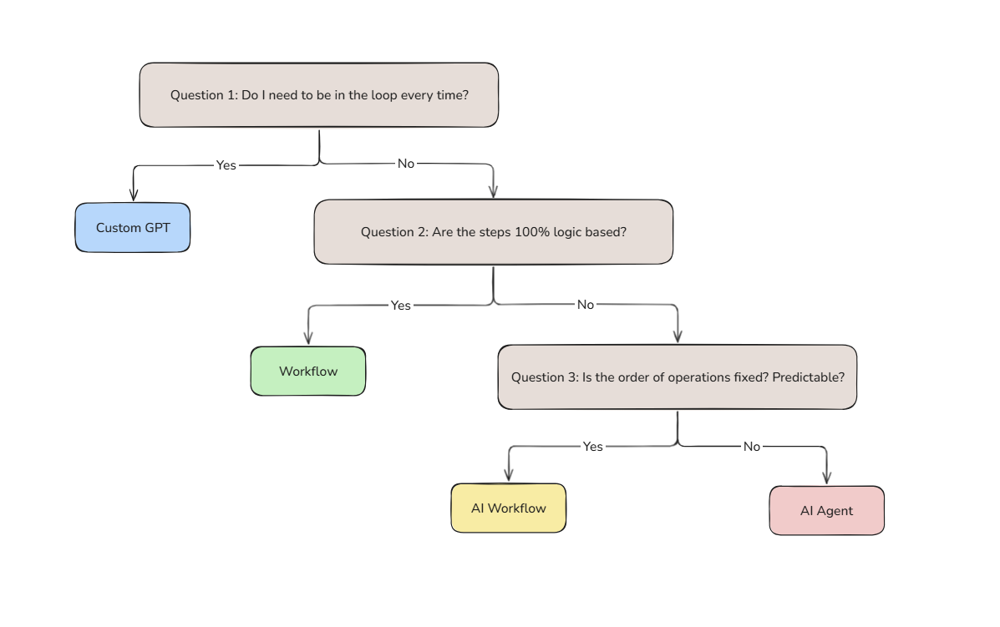
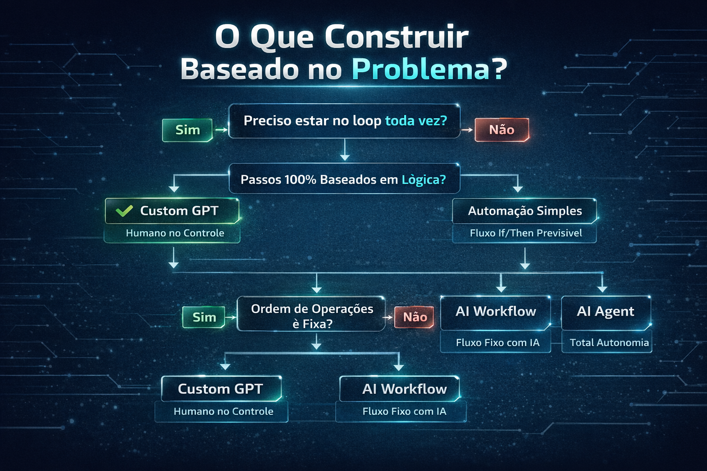

Fluxo de Decisao
Como escolher a camada certa da piramide para cada problema

O fluxo de 3 perguntas para escolher a camada certa
O Mapa de Decisao
3 perguntas para nunca mais errar
O fluxo de decisao e sua bussola para escolher a camada certa. Com apenas 3 perguntas simples, voce sempre chega na solucao mais eficiente para cada problema.
Lembre-se:
"Nao existe resposta universal. O melhor sistema depende do problema real, do processo humano, e dos custos envolvidos."
As 3 Perguntas Essenciais
Siga na ordem para chegar na resposta
Preciso estar no loop toda vez?
O humano precisa estar presente em cada execucao para revisar, aprovar ou ajustar o resultado?
SIM →
Custom GPT
Assistente conversacional reativo
NAO →
Proxima pergunta
Os passos sao 100% baseados em logica fixa?
Todas as decisoes podem ser feitas com regras if/then simples, sem interpretacao?
SIM →
Automacao Simples
Fluxo deterministico sem IA
NAO →
Proxima pergunta
A ordem das operacoes e fixa e previsivel?
Os passos sempre seguem a mesma sequencia? Ou podem variar, pular, repetir?
SIM →
AI Workflow
Caminho fixo com decisoes inteligentes
NAO →
AI Agent
Autonomia total, decide o caminho
Versao Visual do Fluxo
O que construir baseado no problema

Excecao Importante
Quando um AI Agent pode ser melhor mesmo com ordem "fixa"
Mesmo que a ordem pareca fixa, um AI Agent pode ser a melhor escolha quando:
Algumas etapas podem ser puladas
O processo tem passos opcionais que dependem do contexto.
Outras podem precisar de repeticao variavel
As vezes repete 0 vezes, as vezes 5 - depende.
Numero de consultas e imprevisivel
Suporte ao cliente que as vezes consulta base 0 vezes, as vezes 5.
Exemplo classico: Agente de suporte ao cliente que precisa consultar a base de conhecimento um numero variavel de vezes dependendo da pergunta - isso e um Agent, nao um Workflow.
Aplicando o Fluxo
Exemplos praticos de decisao
Caso 1: Escrever posts para redes sociais
P1: Preciso no loop? SIM - quero revisar antes de publicar
→ Custom GPT
Caso 2: Backup diario de dados
P1: Preciso no loop? NAO
P2: Logica fixa? SIM - sempre os mesmos passos
→ Automacao Simples
Caso 3: Classificar e-mails de suporte
P1: Preciso no loop? NAO
P2: Logica fixa? NAO - precisa interpretar texto
P3: Ordem fixa? SIM - sempre: ler → classificar → rotear
→ AI Workflow
Caso 4: Agente de pesquisa de mercado
P1: Preciso no loop? NAO
P2: Logica fixa? NAO
P3: Ordem fixa? NAO - decide quais fontes consultar, quantas vezes, quando parar
→ AI Agent
Dica Final: Comece Simples
A estrategia mais segura
Quando estiver em duvida entre duas camadas, comece pela mais simples. Voce sempre pode escalar depois se necessario, mas comecar complexo demais gera custos e manutencao desnecessarios.
A evolucao natural:
Resumo do Modulo
Principio-chave
"Use o fluxo de decisao como bussola, mas o bom senso como capitao."
Parabens! Voce completou a Trilha 1
Agora voce tem os fundamentos necessarios para tomar decisoes inteligentes sobre automacao com IA. Na proxima trilha, vamos colocar a mao na massa!
Ir para Trilha 2: Implementacao